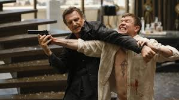
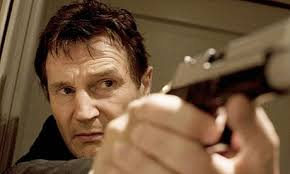
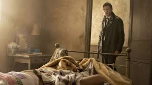

TAKEN
Taken is a 2008 English-language French action-thriller film directed by Pierre Morel and written by Luc Besson and Robert Mark Kamen. It stars Liam Neeson, Maggie Grace, Leland Orser, Jon Gries, David Warshofsky, Katie Cassidy, Holly Valance and Famke Janssen. In the film, Bryan Mills, an ex-CIA officer, sets out to track down his teenage daughter Kim and her best friend Amanda after they are kidnapped by Albanian human traffickers while on vacation in France.
Taken was released in France on February 27, 2008. The film received mixed reviews from critics, and was a financial success, grossing $226 million against a $25 million budget. Numerous media outlets cited the film as a turning point in Neeson's career that redefined him as an action star.[5][6][7] It also launched a franchise, consisting of two sequels and a television series.
ACTION AND DRAMA